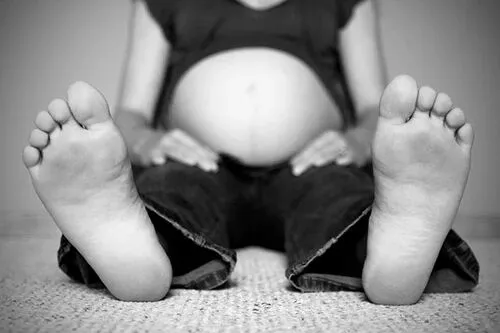
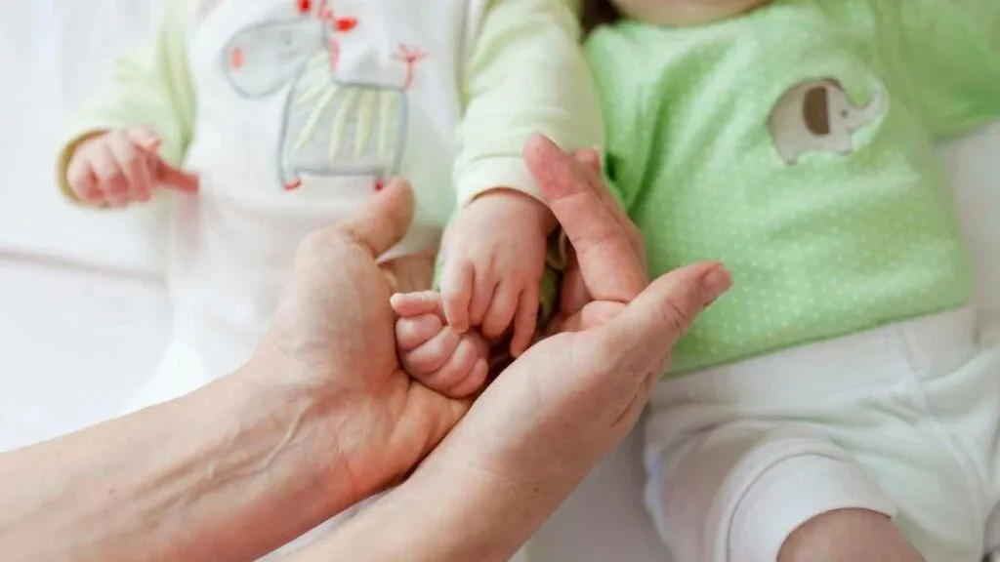
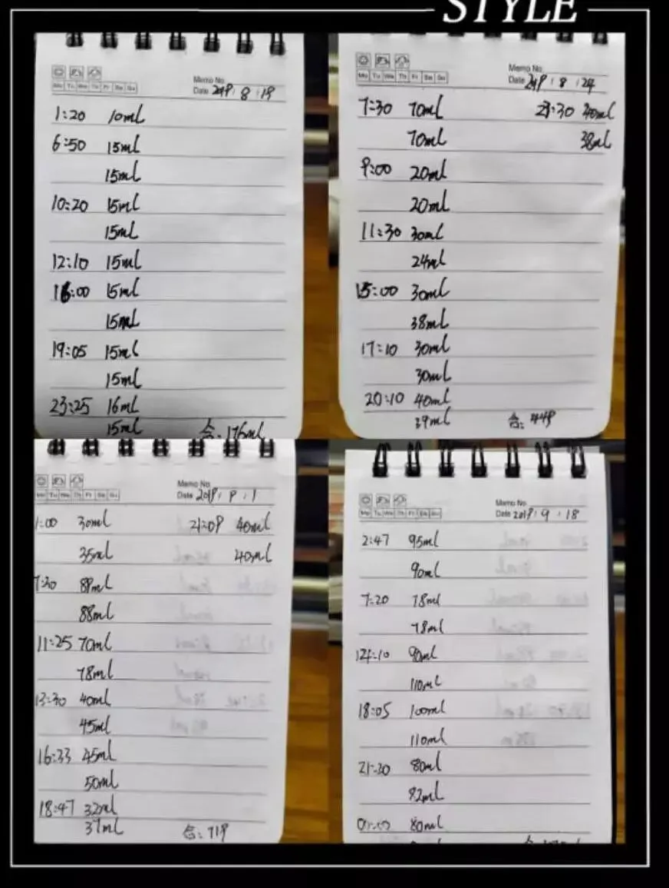
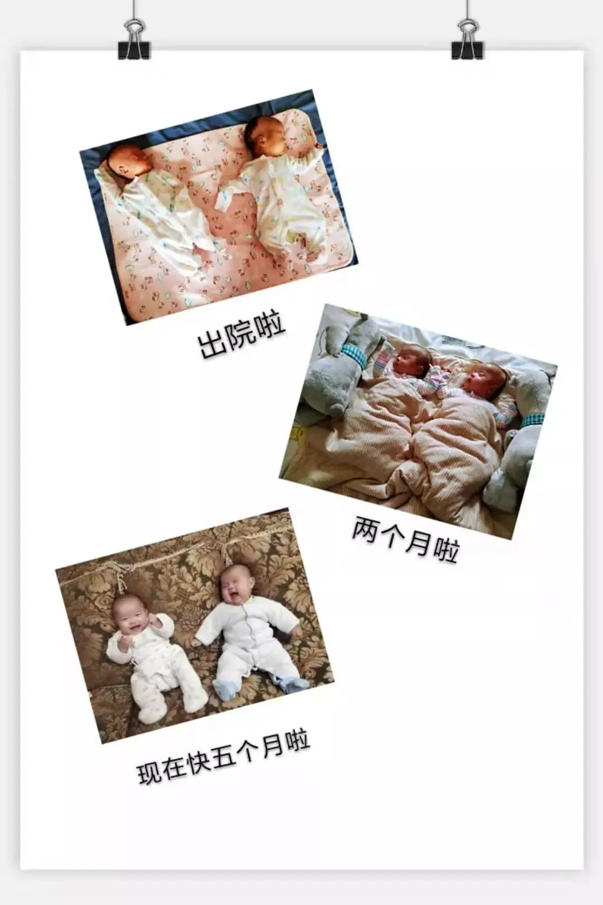

【帮主】圆圈妈妈：
这是孖仔帮双胎专栏【孖妈来了】的第五篇文章，来自双胞胎二宝三宝妈妈的投稿。
说起双胞胎输血综合征TTTs,可能大家都熟悉并谈之色变，但其实还有一个比TTTs更棘手的单绒毛膜双胎妊娠并发症，那就是选择性胎儿生长受限，简称sFGR，它们两者的风险系数不相上下，堪称是双胎妊娠界的“玄冥二老”。
这篇文章是一位亲历过双胎单绒双羊选择性胎儿生长受限的双胞胎妈妈写的，编辑排版时，我正在吃早餐，几度哽咽吃不下，被感动到一塌糊涂！
实不相瞒！
每一位双胞胎妈妈内心都有一道梗，平时不痛不痒，关键时候堵到心塞泪奔！
双胞胎二宝三宝妈妈@猫格格：
我是单绒双羊双胞胎妈妈，因选择性胎儿生长受限二型，33周提前剖腹产，生下一对同卵双胞胎姐妹花，2.5斤/3.8斤。
这是一段这辈子都没法释怀的经历，怀上双胎，亲历生长受限2型，漫漫保胎之路，喜获两枚小棉袄，再到现如今陪伴双胞胎姐妹花健康成长...应圆圈妈妈的邀请，借孖仔帮平台分享出我的双胎孕育经历！
冥冥中
我们仨相遇了
原本想大宝三岁了再要二宝，结果她们没按照计划，提前来了。今年一月份，大姨妈推迟了两天，突然感觉犯困、头晕，头脑飘来了一个念头，会不会是怀孕了？
两个星期前，我做了一个胎梦，梦里怀了一对双胞胎女孩，生下来我自己一看，太难看了，跟我家大宝差远了，于是让宝爸拿走，宝爸说，再难看也得喂奶啊~
第二天醒来，跟宝爸说起这个胎梦，宝爸说别神经了，结果拿出试纸一测，弱阳性，赶紧去医院抽血化验，HCG高达500，意思是，我真的怀孕了！
我不哭
只是大自然的恶作剧而已
第一次孕检，
B超大夫问，你是第一次孕检吗？
我说，是的。
她说，双胞胎啊。
我又惊又喜又怕，因为我怀孕当月用了麻药拔牙，还吃了消炎药。怀着忐忑的心挂了专家号，主任算着日子，说影响不大，先观察看看。
鉴于此，每一次孕检我都特别小心翼翼，生怕出了什么问题，期间一直很顺利，两胎儿大小也相当。好不容易熬过了系统筛查，却发现我的宝宝偏小两周，医生让我多吃，两周后复诊。
于是我回家后就开启疯狂吃货模式，但因为双胎，胃口一直不好，没有食欲，只能硬来，为了给两胎儿输送更多营养，强迫自己必须吃下去！
忐忑不安地过了两周，迎来复诊日，做了B超，主任看了一眼报告单，说情况很不好，其中一胎儿舒张期血流偶尔消失，让赶紧去北京三医院！
我只觉得一个晴天霹雳，早孕期有做功课，知道像我这种单绒双羊可能会出现双胞胎输血综合征，但是生长受限还是第一次听，也不知道是什么情况，但是主任说要快，趁着清明过节前去，她的语气让我感到了事情的严重。
回到家，心急如焚地告诉老公结果，然后开始查阅资料，接着计划着怎么去北京，以及怎么挂号等，同时我也在双胞胎妈妈群里发B超单子咨询是否有跟我同样情况的孕妈。
有经验的姐妹们直接告诉我这是生长受限一型，并建议我赶紧去北京第三医院（下文省略成北医三），要挂魏瑗主任的号，她是北方的双胎权威专家。
可是我查了一下，魏主任的号根本挂不上，并且清明节后也不可能有她的号，我的心更焦急了，幸好有双胞胎群里的姐妹们出谋划策，告诉我怎样可以尝试挂到魏主任的号，于是我和老公连夜出发，北上求医！
求医之路
我要坚强
经过三个多小时，我们到达了北医三，此时已经是晚上11点，我顾不上巨肚带来的行动不便，直接奔向了急诊，但碰了一鼻子灰，急诊只收治大出血或者肚子疼的孕产妇，不收像我这种病人，而且急诊不能做B超。
我急得眼泪直打转，很绝望，感觉医院近在咫尺，却远在天边，根本解决不了问题。老公安慰我，带我找了地方住下，准备明天再来。
第二天一大早，7点整，我们到了医院。此时医院里早已人山人海了。我更着急了，挺着巨肚穿梭在人流中，焦灼地寻找着魏主任的办公室，终于打听到地点，又发现诊室外此时已经排了长长的队伍。
好多文件袋和水杯都在此排队🔼
因为是第一次来，我才知道在这里排队的都是来找主任加号的，此时的我是队伍中的第三位。老公让我在旁边坐，他来排队，我不肯，我不想错过这个机会，我情愿自己站在那里等待着开门。
七点半，门开了！
第一个妹子进去了，成功约上了。第二个妹子进去，被派到了特需门诊，她很不情愿的走了。第三个轮到我了，我递上了我的转诊证明，B超单子，简单说明了一下病情，导医马上给我加号了。
经过一系列的步骤，终于可以坐下来等叫号了，正好双胞胎妈妈群里有个姐妹也在这里，我们面基成功。
又经过一阵焦急的等待，我终于见到大家口中神一般的魏主任。她对待病人十分温柔，她快速浏览了我的资料，说怀疑是生长受限二型，并说现在快24周就不考虑减胎，让先做个B超看看！
因为北三的B超要预约，我们又煎熬了一周。
第二周，我们再次来到北三，做了B超，超声显示脐血流持续消失。
魏主任的原话：“你现在是生长受限二型，是情况最不好的一种，目前没有治疗方案，回家正常的作息和饮食吧，如果能挺过28周就可以回来找我，如果有一个胎死腹中，可能两个都保不住了。”
我只觉得天旋地转，眼泪哗哗地流，在疯狂查阅相关资料后，我接受了现实。主任说的非常客观，世间也没好的办法，受限的成因也多种多样，医学界至今也没有定论，只能增加检查次数，随时监测胎儿的情况。
保胎之路
我们娘仨加油
回家保胎的日子，我体会到了什么叫度日如年。每天呆在家里，数着日子，期待产检日的到来，苦苦熬到了28周，在这期间我做了双胎的四维检查，2周一次B超。
28周后，我的内心有一个希望之声在告诉我，我的宝宝们保住了，之后无论哪天出生，她们存活的几率会更大，而且脐血流也不持续消失了，就是S／D值一直很高。
28周的一次B超，当地的产科主任说：“我现在光听见声音就知道你来了。怎么样，让你熬过了28周，你生不生啊？”
我自豪地说：“我成功了一半啦，我要住院打地塞米松（大家口中的促肺针）”
我在医院打促肺针，住了几天，出院后，我联系了北三的魏主任，从她那里得知，我过了28周之后就是继续观察，然后找机会剖腹产。
如果是32周以前生，她和我们当地的主任都建议我去北三生，因为那里的早产儿救助技术更好，我回家跟老公商量后，决定继续在本地医院持续观察。
每天我都尽力不去想那些不好的事情，盯着日历，每过一个零点钟，我就会激动半天，这表示，我又熬过了一天。
因为提早出生，两个孩子的治疗费用是个无底洞。主任不止一次找我谈话，说太早出生，可能花费超过30万，但是不生，随时可能会有危险。
每天我都自己在家监测胎心，一周两次B超，两个胎心监护。我一周去医院报到的次数差不多是三四次，以至于这个医院所有的B超大夫都给我做过B超，而且主任特意交代了我的情况，让B超室所有给我做检查的大夫一定要小心。
我成功的挂名了这个医院的妇产科院区，就连开电梯的大姐都认识我了！
谢谢你们的不离不弃
我们娘仨见面了
33周整，例行产检，B超显示脐血流消失了，主任直接给我办理了住院。上午11点半，我办好手续，就被扣在了医院，待产包啥都没有，连澡都没洗。我老公接了我的电话，匆匆赶来医院，此时我已经备皮结束了，我就像赶鸭子上架一样上了手术台。
下午1点20分，随着两声啼哭，我的二宝出生了，哭的声音还不小，接着就是三宝，她的哭声没有二宝的大。听到我的两个女儿都顺利出生了，我的泪水忍不住掉了下来。
1点40分，我被推出了手术室，然后见到我老公，他说两个孩子因为呼吸问题，进了NICU。
老公告诉我宝宝太小了，一个两斤半，一个三斤八两。他没敢仔细看，是他抱着两宝宝去的新生儿科，宝宝们此时都紫了，大夫没说能不能救活，我听了这个消息，心情又跌落到谷底。
带着身体的疼痛、内心的失落与不舍，我先出院了。在月子里，也是各种坏消息频频出现，老公只是挑着一些轻微的症状告诉我，还有好多他特意不说，这是后来宝宝们出院了我翻阅出院病历看到的。
每个宝宝的病历就像一本厚厚的书。她们经历的呼吸暂停、黄疸、肺炎、呕吐、消化不良、贫血、输血等等的一系列难关。出院时，宝宝们每个人身上头上都是针眼，庆幸的是，她们都挺过来了。
因为宝宝没在身边，我月子里都在努力地挤奶，从刚开始一天挤一百多毫升，到最后一千多毫升，我所能做的就是给宝宝们留住她们的口粮，等她们出院回家后能喝上温热的奶，名字叫妈妈牌的奶。
为了保证源源不断的奶量，我不分昼夜起来挤奶，拼命吃，导致我现在跟生之前的体重差不了多少，人还是个球形，但是我不后悔我的选择。
吸奶部分记录🔼
二宝出院时3.9斤，三宝4.1斤。
现在她们已经快5个月了，一个10斤多，一个12斤多。
感恩，知足
惟愿世间一切安好
感谢我们的祖国医学技术越来越发达。
感谢我遇到的那些大夫，是他们为我保驾护航了这么久，用他们精湛的医术守护了我的两个宝宝。
感谢我老公持之以恒对我和宝宝们的付出。
感谢圆圈妈妈和孖仔帮双胞胎社群，在我最无助的时候，有人鼓励我，有人陪伴我，坚持到最后，与其同时，我在群里也收获了众多好朋友们，与她们建立了深厚的姐妹情谊！
愿你们都不会遇上我这种情况，即使真的遇上，也请相信科学。
如果你们遇到了我这种情况，可以私信我了解详情，我会尽可能地帮助你。
最后祝愿圆圈妈妈的平台越来越好，能帮助更多的人！
THE
END
原文作者/双胞胎二宝三宝妈妈
编辑排版/圆圈妈妈
写手招募
如果你是爱分享的双胞胎爸爸或妈妈
欢迎投稿至孖仔帮【双胎专栏】
分享出你和双胞胎的成长故事
添加圆圈妈妈微信sgguy-com
备注“投稿”
-END-
今日互动话题
#你的双胎妊娠遇到过哪些惊心动魄的事情？#
评论区聊一聊呗！
微信公众号：孖仔帮
ID : twinsbang
专注双胞胎孕育，养育，教育经验分享
@www.sgguy.com
扫码关注我们
我知道你在看哟



